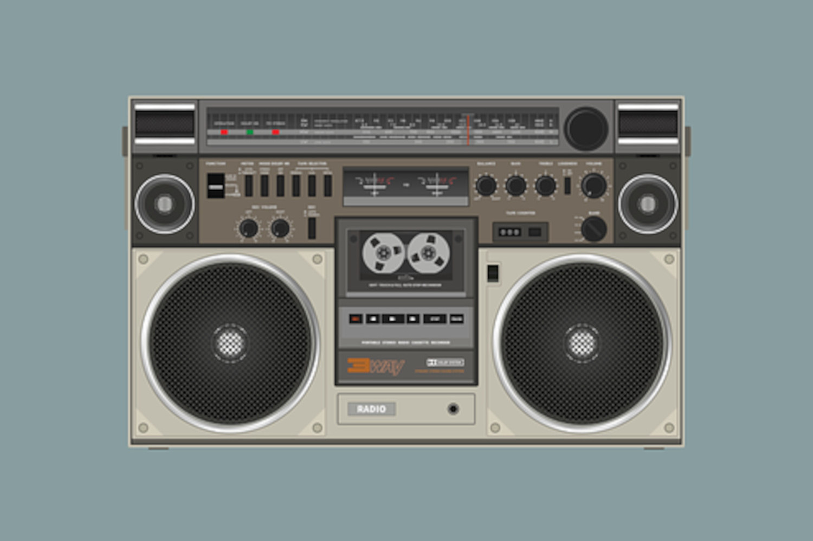

JavaScript is off. Please enable to view full site.
Static github Website Error Page
Error Page
An error happened. Now you're reading this.
Now look at this picture for a bit.

A 1980's style portable radio cassette player (with graphic equaliser!)